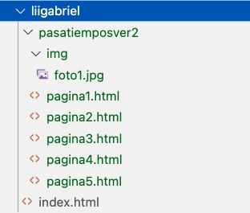
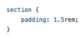
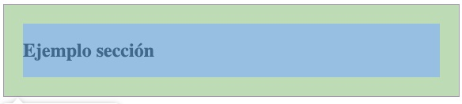

En este sitio se presenta la información de cada práctica que se tiene que
realizar en Fundamentos de Desarrollo Web.
Los links que se piden debe guardarlos, ya que posteriormente se agregaran
en una página personal de sus evidencias dentro de la organización
FDW53AD2025.
Es importante mencionar que no hay que mandar nada a Nexus o Teams,
solamente realizar las prácticas en las fechas indicadas y cumpliendo con
lo solicitado.
Las prácticas realizadas fuera de tiempo no serán evaluadas.
En los links de ejemplo presentados en este sitio se utiliza la palabra
demo para representar a un repositorio y
usuarioGithub para representar a un usuario. En sus links
se debe reemplazar el repositorio y usuario por los correctos.
Evidencia 1
Práctica 1
Publicar pagina web sencilla en cuenta personal Github.
Se debe realizar un solo documento html donde se integre información
sobre sus pasatiempos. Utilizar las etiquetas p,img, h1, h2. Aplicar estilos sencillos como
color de texto, fondo y borde. Para los estilos utilizar un archivo
externo css. Se necesita que realice 1 commit por cada tema que
desarrolle.
Ejemplo de pasatiempos de alguna persona.
- Deportes (1 commit)
- Series (1 commit)
- Comics (1 commit)
- Videojuegos (1 commit)
En total serían 4 commits. Realizar cada commit al finalizar cada tema.
Fecha commits: 13 al 15 de Agosto.
Links que debe guardar para la práctica:
Práctica 2
En esta práctica se creó una carpeta personal en la organización y dentro de la misma se agregó un archivo llamado index.html.
El archivo index.html será la página personal de cada estudiante. Se solicitó agregar los links de la primera práctica.
Fecha commits: 20 al 22 de Agosto.
Links que debe guardar para la práctica:
Práctica 3
Modificar la página pasatiempos que desarrollo en su cuenta personal.
Está practica consiste en realizar la versión 2 sobre sus pasatiempos,
pero esta vez se tiene que guardar en la organización. Se solicita que
utilice 5 archivos html para la información de sus pasatiempos. En
cada documento html utilice etiquetas de estructura (header,nav,
main,aside,footer). Es necesario que se maneje una barra de navegación para cambiar entre paginas.
Se deben agregar nuevas etiquetas de las paginas 23,27, 29, 30,31,32
del material de clase.
Dentro del nuevo sitio diseñe algún formulario (form).
Fecha commits: 27 al 29 de Agosto.
Para mantener organizados sus archivos es necesario crear una nueva
subcarpeta dentro de su carpeta personal. En la carpeta
img puede guardar sus imagenes locales. Ver la
siguiente imagen:

Nota: Las imagenes si las maneja como locales que no sean de alta
resolución. Los videos de preferencia que sean externos (accedidos
mediantes url).
Link:
Práctica 4
Aplicar estilo personalizado a su link de la página principal de la organización. Los estilos aplicados deben ser almacenados dentro de su carpeta en la organización. Será necesario agregar un link css en la sección head del archivo index (archivo de la organización).
Fecha commits: 1 al 3 de Septiembre.
Link:
Práctica 5
Utilizando sus archivos HTML sobre sus pasatiempos versión 2. Crear
un sitio donde se muestre por lo menos un ejemplo de cada selector CSS.
Selectores
- Selector universal
- Selector de tipo
- Selector por ID
- Selector por clase
- Selector de atributo
- Selector de lista
- Selector de descendientes
- Selector hijos directos
- Selector hermano adyacente
- Selector hermano general
Cada selector debe contener:
- Nombre del selector
- Imagen del código CSS que se aplicará
- Imagen del resultado aplicando el código CSS a su HTML
Ejemplo de Selector
Selector de tipo
Código CSS

Resultado:
La salida debe ser de una captura de su sitio pasatiempos en donde se aplico la regla CSS
En la captura se observa según el relleno aplicado a la sección.

Fecha commits: 8 al 10 de Septiembre.
Links: